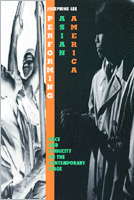

A fascinating inquiry into the territory of race and ethnicity in American theater
A fascinating inquiry into the territory of race and ethnicity in American theater


 A fascinating inquiry into the territory of race and ethnicity in American theater
A fascinating inquiry into the territory of race and ethnicity in American theater

|  |
Performing Asian AmericaRace and Ethnicity on the Contemporary StageJosephine Leepaper EAN: 978-1-56639-637-0 (ISBN: 1-56639-637-9) |
Lifetime Achievement Award from the Association of Asian American Studies Conference, 2016
At a time when Asian-American theater is enjoying a measure of growth and success, Josephine Lee tells us about the complex social and political issues depicted by Asian-American playwrights. By looking at performances and dramatic texts, Lee argues that playwrights produce a different conception of "Asian-America" in accordance with their unique set of sensibilities.
For instance, some Asian-American playwrights critique the separation of issues of race and ethnicity from those of economics and class, or they see ethnic identity as a voluntary choice of lifestyle rather than an impetus for concerted political action. Others deal with the problem of cultural stereotypes and how to reappropriate their power. Lee is attuned to the complexities and contradictions of such performances, and her trenchant thinking about the criticisms lobbed at Asian-American playwrights-for their choices in form, perpetuation of stereotype, or apparent sexism or homophobia-leads her to question how the presentation of Asian-American identity in the theater parallels problems and possibilities of identity offstage as well.
Discussed are better-known plays such as Frank Chin's The Chickencoop Chinaman, David Henry Hwang's M. Butterfly, and Velina Hasu Houston's Tea, and new works like Jeannie Barroga's Walls and Wakako Yamauchi's 12-1-a.
Excerpt available at www.temple.edu/tempress
"One of the first major studies of Asian American drama, Lee's Performing Asian America serves as a cleanly argued and theoretically engaging study of the construction and performance of identity both onstage and off."
—MELUS
"...as a first text on such matters Lee's important work establishes a solid grounding for future work on Asian American dramatic literature."
—Asian Theatre Journal
Acknowledgments
1. Critical Strategies for Reading Asian American Drama
2. The Asian American Spectator and the Politics of Realism
3. The Chinaman's Unmanly Grief
4. The Seduction of the Stereotype
5. Acts of Exclusion: Asian American History Plays
6. Asian American Doubles and the Soul under Capitalism
7. Staging "Passing" on the Borders of the Body
Epilogue
Notes
Works Cited
Index
Photographs
 | Josephine Lee is Assistant Professor of English at the University of Minnesota, Twin Cities. |
Asian American Studies
American Studies
Literature and Drama
Asian American History and Culture, edited by K. Scott Wong, Linda Trinh V�, and Cathy Schlund-Vials.
Founded by Sucheng Chan in 1991, the Asian American History and Culture, series has sponsored innovative scholarship that has redefined, expanded, and advanced the field of Asian American studies while strengthening its links to related areas of scholarly inquiry and engaged critique. Like the field from which it emerged, the series remains rooted in the social sciences and humanities, encompassing multiple regions, formations, communities, and identities. Extending the vision of founding editor Sucheng Chan and emeriti editor Michael Omi and David Palumbo-Liu, series editors K. Scott Wong, Linda Trinh V�, and Cathy Schlund-Vials continue to develop a foundational collection that embodies a range of theoretical and methodological approaches to Asian American studies.
© 2016 Temple University. All Rights Reserved. This page: http://www.temple.edu/tempress/titles/1265_reg.html.